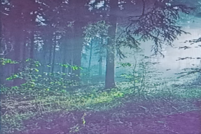

Avistaje de Aves y Fauna
Recorrido guiado para la observación e identificación de especies autóctonas en su hábitat natural.
Duración: 2 horas

Recorre un ecosistema único rodeado por arroyos y biodiversidad nativa. Una caminata guiada e inolvidable en pleno contacto con la naturaleza.
Reservar PaseoExplorá todas las experiencias que tenemos para vos en la reserva
Recorrido guiado para la observación e identificación de especies autóctonas en su hábitat natural.
Caminata nocturna para contemplar el cielo estrellado y descubrir las leyendas y mitos locales.
Caminata de exploración por senderos naturales rodeados de flora y vegetación autóctona.
Taller práctico para aprender a capturar la biodiversidad y paisajes con técnicas de fotografía outdoor.